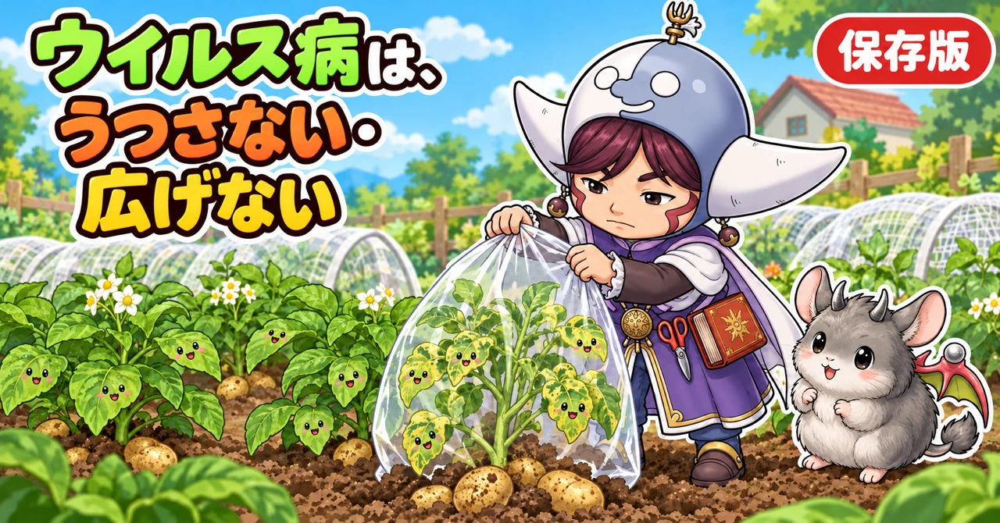
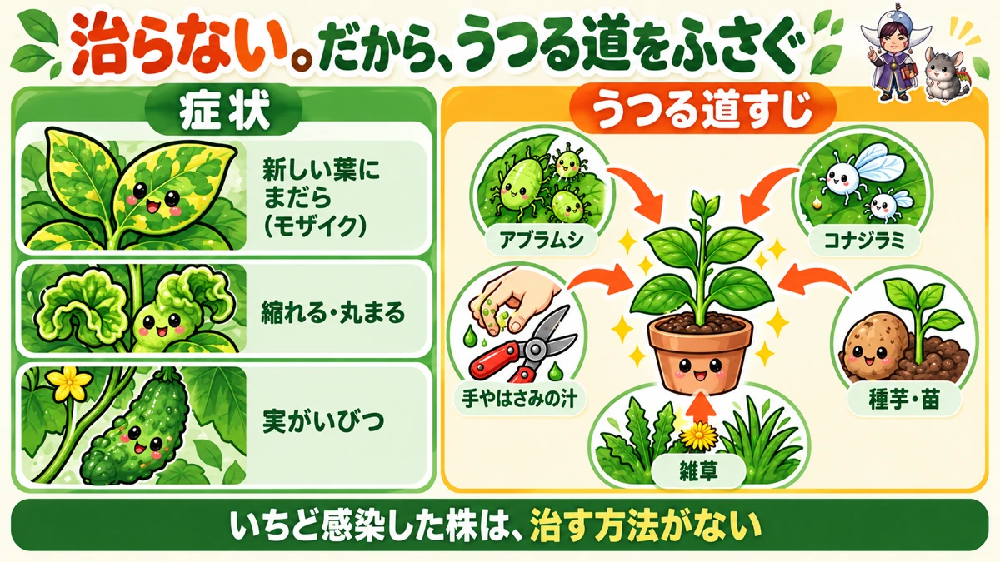
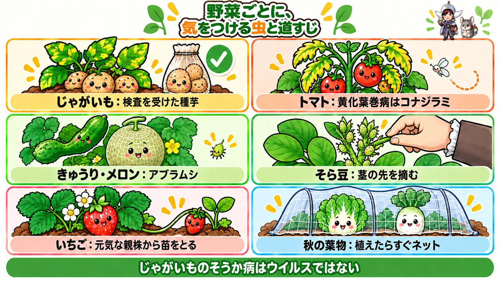
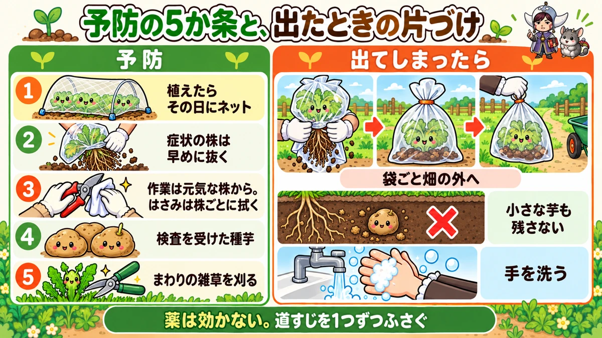

モザイク病・ウイルス病対策の決定版｜治らない病気の見分け方、うつる道すじ、種芋とはさみの注意

📖 この記事の目次
この記事で分かること
- ウイルス病は、ウイルスが野菜の体に入りこんで起こる病気です。葉に濃い緑と薄い緑のまだら模様が出る「モザイク病」が代表的です。
- いちど感染した株は、治す方法がありません。薬も効きません。だから、うつさないこと、広げないことがすべてです。
- ウイルスをうつすのは、アブラムシ、コナジラミ、アザミウマなどの小さな虫。ほかに、作業する人の手やはさみについた汁、ウイルスを持った種芋やタネからもうつります。
- じゃがいも、トマト、きゅうり、メロン、ピーマン、そら豆、いちごなど、多くの野菜で出ます。
- 予防は、虫を寄せない（ネット、銀色の反射、雑草の整理）、道具と手を清潔に、検査を受けた種芋や健全な苗を使う、の3つが柱です。
- 症状の出た株は、早めに抜いて畑の外へ。そのままにすると、虫がほかの株へ運んでしまいます。
春のじゃがいもの葉に、濃い緑と薄い緑のまだら模様が出て、だんだん縮れてきた。夏のきゅうりの新しい葉が、黄色くまだらになって、実もいびつになってきた。トマトの株の先の葉が、黄色く縮れて丸まり、株がそれ以上育たなくなった。こうした症状は、ウイルスによる病気のことがあります。
ウイルス病は、かびや細菌の病気と違って、出てしまってから治す方法がありません。そのぶん、ほかの病気以上に、「どうやってうつるのか」を知って、前もって防ぐことが大切になります。この記事では、ウイルス病の見分け方から、うつる道すじ、野菜ごとの注意、予防、出てしまったときの片づけ方まで、順番に書いていきます。
早見：ウイルス病の基本
症状
- 葉に、濃い緑と薄い緑（または黄色）のまだら模様が出る（モザイク）
- 新しい葉が、細くなる、縮れる、丸まる、小さくなる
- 株の伸びが止まり、ずんぐりしたまま育たない
- 実がいびつになる、表面にでこぼこやまだらが出る
- 葉に、輪のような模様や、茶色い斑点が出ることもある
うつる道すじ
- アブラムシ：きゅうり、メロン、ピーマン、そら豆、じゃがいも、いちごなど多くの野菜
- コナジラミ：トマトの黄化葉巻病など
- アザミウマ：トマト、ピーマンなどの一部のウイルス
- 手やはさみ：病気の株の汁がついたまま、ほかの株を触る
- 種芋、タネ、苗：はじめからウイルスを持っている
やること
- 植えたらすぐ、防虫ネットや銀色の反射で虫を寄せない
- 畑のまわりの雑草を整理する（虫とウイルスのすみか）
- 検査を受けた種芋、元気な苗を使う
- はさみや手を清潔に。病気が疑わしい株を触ったら、ほかの株を触る前に洗う
- 症状の出た株は、早めに抜いて畑の外へ

ウイルス病という病気
かびや細菌の病気とは違う
野菜の病気の多くは、かびや細菌によって起こります。うどんこ病やべと病はかび、軟腐病は細菌が原因です。これに対して、ウイルス病は、かびや細菌よりもはるかに小さいウイルスが、植物の細胞の中に入りこんで増えることで起こります。
治す方法がない
ウイルスは、植物の細胞の中で、植物のしくみを使って増えます。いちど株の中に入りこむと、株全体に広がり、取り除く方法がありません。かびや細菌の病気に使う薬も、ウイルスには効きません。
だから、ウイルス病は、感染させないこと、感染した株からほかの株へ広げないことが、対策のすべてです。
同じ症状でも、原因のウイルスはいろいろ
「モザイク病」は、葉にまだら模様が出る症状をまとめた呼び名で、原因になるウイルスは、野菜によっていろいろあります。いろいろな野菜にうつるウイルスもあれば、特定の野菜にだけうつるウイルスもあります。家庭菜園では、原因のウイルスを細かく見分ける必要はありません。「まだらと縮れが出たら、ウイルス病を疑い、広げない」と覚えておけば十分です。
かかりやすい時期
ウイルス病が広がりやすいのは、ウイルスをうつす虫が多い時期です。
- アブラムシ：春（4〜6月ごろ）と秋（9〜11月ごろ）に多い
- コナジラミ：暖かい時期、特に夏から秋に多い
- アザミウマ：春から秋に多い
この時期に植える苗や、この時期に若い株を育てている野菜は、特に念入りに守ります。
症状の見分け方
新しい葉に出る
ウイルス病の症状は、株の先の新しく出てくる葉に、はっきり出ることが多いのが特徴です。
- 新しい葉に、濃い緑と薄い緑のまだら模様
- 新しい葉が細く、小さく、縮れる
- 葉のふちが巻く、葉が丸まる
- 株の先が詰まって、伸びなくなる
古い下の葉から黄色くなっていく場合は、肥料切れや、根の傷みなど、別の原因のことが多いです。
似た症状との見分け方
- 肥料切れ：下の古い葉から全体に淡くなる。まだらにはならないことが多い
- 寒さ：冬の葉が紫っぽくなったり、葉先が傷んだりする。暖かくなると戻る
- アブラムシやダニの被害：葉の裏に虫がいる。新しい葉が縮れることもあるので、虫を確かめる
- ウイルス病：新しい葉にまだら模様と縮れが続いて出る。株の育ちが止まる
迷ったときは、同じ畑の元気な株の新しい葉と見比べます。1株だけ新しい葉の様子がおかしく、それが日を追って進むなら、ウイルス病を疑います。
実の症状
- きゅうり：実がいびつになる、表面にでこぼこや、まだら模様が出る
- トマト：実が小さく、数が少なくなる
- ピーマン：実の表面にまだらやでこぼこが出る
- メロン、すいか：実の表面に模様や、ゆがみが出る
じゃがいものそうか病は別の病気
じゃがいもの芋の表面に、かさぶたのような褐色のでこぼこができる「そうか病」は、ウイルスではなく、土の中の細菌の仲間による病気です。土がアルカリ性に傾いていると出やすくなります。葉のまだら模様（モザイク病）とは原因も対策も違うので、分けて考えます。
見回りのしかた
- 株の先の、新しく開いた葉を中心に見る
- 同じ畑の元気な株の新しい葉と見比べる
- まだら模様が出ていたら、葉の裏にアブラムシやコナジラミがいないかも確かめる
- 気になる株には目印をつけて、数日後にもう一度見る。症状が進んでいれば、ウイルス病の可能性が高い
ウイルス病は、1回見ただけでは、肥料切れや寒さとの区別がつきにくいことがあります。数日おいて、新しい葉にも同じ症状が続くかどうかを見るのが確実です。
うつる道すじ
1．アブラムシ
ウイルス病をうつす虫の代表がアブラムシです。病気の株の汁を吸ったアブラムシが、元気な株に移って汁を吸うときに、ウイルスもいっしょに運ばれます。
アブラムシがうつすウイルスの中には、ほんの短い時間吸っただけでうつるものがあります。そのため、「アブラムシがついてから退治する」のでは間に合わないことがあり、「そもそも飛んでこさせない」ことが大切です。アブラムシそのものの対策は、アブラムシ対策の記事にくわしく書いています。
2．コナジラミ
トマトの「黄化葉巻病」は、タバココナジラミという小さな白い虫がうつすウイルス病です。株の先の新しい葉が、黄色くなって、ふちから内側に巻き、縮れて、株の伸びが止まります。
コナジラミは、とても小さく、ふつうの目合いの防虫ネットはくぐり抜けてしまいます。施設栽培では、0.4mm以下の目合いのネットを使うことがすすめられています。
3．アザミウマ
アザミウマ（スリップス）も、トマトやピーマンなどに、ウイルス病をうつすことがあります。とても小さな細長い虫で、花の中や葉の裏にいます。
4．手やはさみ
ウイルスの中には、病気の株の汁がついた手やはさみで、ほかの株を触ることでうつるものがあります。芽かきや収穫、整枝のときに、病気の株を触ったはさみで、そのまま元気な株の芽をかくと、そこからうつることがあります。
5．種芋、タネ、苗
じゃがいもの種芋がウイルスを持っていると、そこから育った株は、はじめから病気になっています。タネや買ってきた苗が、ウイルスを持っていることもあります。
6．雑草
畑のまわりの雑草の中には、ウイルスを持っているものや、ウイルスをうつす虫のすみかになっているものがあります。雑草から虫が飛んできて、野菜にうつすことがあります。

野菜ごとの注意
じゃがいも
じゃがいもは、モザイク病がとても出やすい野菜です。アブラムシが多くなる4月以降に、葉にまだら模様が出はじめ、進むと葉が縮れ、黄色くなって、黒っぽい斑点が出て、枯れていきます。
- 種芋は、検査を受けて「消毒済み」などの表示がある、信頼できるお店のものを使う
- 種芋を買うとき、腐っていないか、ぶよぶよしていないか、芽の出るくぼみがいくつかあるかを確かめる
- 食用に買ったじゃがいもや、自分で収穫した芋を、毎年種芋に使い回すと、ウイルスがたまりやすい
- 肥料を入れすぎない（株がやわらかくなり、アブラムシが寄りやすくなる）
- アブラムシを早めに払う
- モザイク病が出た株は、早めに抜く
モザイク病が出た株の葉を全部切って、新しい芽が出るまで育ててみた、という試みでは、葉は元気に戻ったものの、芋は大きくならなかった、という結果が出ています。出てしまったら、あわてず、その時点で収穫してしまうほうがよいでしょう。
収穫のときは、小さな芋も含めて、土の中に芋を残さないようにします。残った芋から、次の年に芽が出て、そこからまたウイルスが広がることがあります。
じゃがいもの見回りと植えつけのこつ
- 植えつけの前に、種芋をよく見る。切り口や表面が腐っていないか、ぶよぶよしていないか
- 芽が出たら、芽かきで株を整理し、株元の風通しをよくする
- アブラムシが増える4月以降は、葉の裏と株の先を見る
- まだら模様の葉が1〜2枚出はじめた段階なら、その葉を取って様子を見る、という方法を試す人もいる。ただし、症状が進んだ株を元に戻すのはむずかしい
- 収穫の間際に出た症状なら、芋はある程度育っているので、そのまま収穫まで育ててもよい
- 芽が出てすぐに症状が出た株は、早めに抜く
モザイク病が出ても、全体に広がらなければ、残りの株から収穫は得られます。感染していない株を守ることが、収穫量を守ることにつながります。
トマト
- 黄化葉巻病（コナジラミ）：株の先の葉が黄色くなって巻き、縮れ、株の伸びが止まる
- モザイク病（アブラムシ、手）：葉にまだら模様、縮れ
コナジラミは雑草でも増えるので、畑のまわりの雑草を整理します。病気に強いとうたった品種もありますが、強い品種でも感染はしていて、ほかの株へのうつり元になることがあるので、コナジラミ対策は同じように行います。
きゅうり、メロン、すいか、かぼちゃ
アブラムシがうつすウイルス病が出やすい野菜です。葉のまだらと縮れ、実のいびつさやまだらが目印です。苗のうちの防虫ネットと、銀色の反射でアブラムシを寄せないことが大切です。
ズッキーニ
ズッキーニの葉には、もともと葉脈にそって銀色っぽい模様が入る品種があります。これは病気ではありません。ウイルス病の場合は、新しい葉が縮れたり、実にでこぼこやまだらが出たりします。
ピーマン、なす
アブラムシやアザミウマがうつすウイルス病が出ることがあります。葉のまだら、実のまだらやでこぼこに注意します。
そら豆、えんどう
そら豆は、アブラムシが特に多くつく野菜で、モザイク病も出やすくなります。茎の先にアブラムシが集まりやすいので、摘心をかねて先を摘み、アブラムシを減らします。
オクラ、ゴーヤなど
オクラやゴーヤなどにも、アブラムシやコナジラミがうつすウイルス病が出ることがあります。新しい葉のまだらや縮れに気をつけ、苗のうちはネットで守ります。
いちご
いちごも、アブラムシがうつすウイルス病が出ることがあります。親株から伸びるつるの先の子株で苗を増やす場合、親株がウイルスを持っていると、子株にもうつります。元気な親株から苗をとるようにします。
白菜、大根、小松菜など
アブラナの仲間にも、アブラムシがうつすモザイク病が出ることがあります。秋はアブラムシが増える時期なので、植えたらすぐ防虫ネットをかけます。
秋冬野菜のアブラムシに注意
秋は、春と並んでアブラムシが増える時期です。大根、白菜、かぶ、小松菜などのアブラナの仲間には、アブラムシがうつすモザイク病が出ることがあります。
- タネをまいたら、すぐに防虫ネットのトンネルをかける
- 肥料、特に窒素を入れすぎない（窒素が多いと、葉の汁の中の養分が増えて、アブラムシが増えやすくなる）
- 葉の裏と、株のまん中の若い葉を見回る
予防
1．虫を寄せない
- 植えたらすぐ、防虫ネットや寒冷紗で覆う。コナジラミまで防ぎたいなら、目の細かいネットを
- シルバーマルチや銀色のテープで、アブラムシなどの飛来を減らす
- 黄色い粘着シートで、飛んでくる虫の数を見る
- 苗は、植える前に葉の裏を確かめ、虫のついていないものを植える
2．雑草を整理する
畑のまわりの雑草は、ウイルスをうつす虫のすみかで、ウイルスそのものを持っていることもあります。うねのまわりや畑のふちの雑草は、こまめに刈ります。前の年のトマトのこぼれダネから生えた株（野良生え）も、抜いておきます。
3．手とはさみを清潔に
- 作業は、元気な株から先に、気になる株はあとにする
- 病気が疑わしい株を触ったら、ほかの株を触る前に、手を石けんで洗う
- はさみは、株ごとに拭く。病気の株に使ったはさみは、洗って消毒してから使う
- 芽かきは、はさみを使わず、手でかき取る方法もある（手は洗う）
たばこを吸う人は、たばこに含まれるウイルスが手につくことがあるので、トマトやピーマンなどを触る前に、手をよく洗うように、と言われることもあります。
4．健全な種芋、タネ、苗を使う
- じゃがいもは、検査を受けた種芋を使う
- 苗は、葉の色がよく、まだらや縮れのないものを選ぶ
- 自家採種のタネや、自分で増やした苗は、病気の出なかった元気な株から
5．肥料を効かせすぎない
肥料、特に窒素が多すぎると、株がやわらかく茂り、アブラムシなどの虫が寄りやすくなります。元肥と追肥は、量を守ります。
6．芽かきや整枝は晴れた日に
トマトの芽かきや、きゅうりの整枝は、切り口がすぐに乾く、晴れた日の午前中に行うと、切り口から病気が入りにくくなります。雨の日や、株がぬれているときの作業は、汁が広がりやすいので避けます。
7．苗のうちの守りがいちばん大切
ウイルス病は、株が若いうちに感染するほど、被害が大きくなります。苗のうちに感染すると、株がほとんど育たないまま終わってしまいますが、株が大きく育って実がついてからの感染なら、ある程度の収穫は得られます。
- 植えてから最初の1か月ほどは、ネットで覆う
- 苗を育てる場所でも、虫がつかないように見ておく
- 苗のときに、少しでもまだらや縮れのある株は植えない
8．天敵を味方にする
アブラムシやアザミウマには、テントウムシ、ヒラタアブ、クモなどの天敵がいます。強い薬をあちこちにかけると、天敵も減ってしまいます。ネットと払い落としを中心にすると、天敵もはたらきやすい畑になります。

苗の選び方
ウイルス病は、苗の段階ですでに感染していることもあります。買うときに、次のことを確かめます。
- 新しい葉に、まだら模様や縮れがない
- 葉の色が、株全体で均一
- 株の先が、詰まらずに伸びている
- 葉の裏に、アブラムシやコナジラミ、アザミウマがいない
- 同じ売り場の苗に、症状の出ているものが混じっていない
ポットの苗を家に持ち帰ってから植えるまでの間も、虫がつかないよう、なるべく早く植えて、ネットをかけます。
はさみと手の扱い方
作業の順番
畑での作業は、元気な株から順に行い、気になる株は最後にします。病気が疑わしい株を先に触ってしまうと、その手やはさみで、元気な株にうつしてしまうことがあります。
はさみの手入れ
- 作業中は、株ごとに、はさみの刃を布で拭く
- 病気の株に使ったはさみは、作業のあとに水で汚れを落とし、よく洗う
- 家庭用の消毒用アルコールなどで拭いておく方法もある（すべてのウイルスに効くわけではないので、洗うことと、使い分けることを基本にする）
- 病気が疑わしい株専用のはさみを、1本分けておくのもよい方法
手の扱い
- 病気が疑わしい株を触ったら、すぐに石けんで手を洗う
- 手袋をしている場合は、手袋を替えるか、洗う
- トマトの芽かきなど、手で行う作業も、株から株へ、手を洗わずに続けない
出てしまったら
早めに抜く
症状の出た株は、治りません。そのままにしておくと、虫がその株の汁を吸って、ほかの株へウイルスを運び続けます。残念ですが、早めに抜くのがいちばんの対策です。
1．抜く前に、株についているアブラムシやコナジラミが飛び散らないよう、袋をかぶせる
2．袋をかぶせたまま、根ごと抜く
3．口をしばって、畑の外へ持ち出して処分する
4．抜いたあとは、手を洗い、はさみなどの道具も洗う
5．まわりの株に、虫がいないか、症状が出ていないか確かめる
収穫が近い場合
じゃがいものように、収穫まであと少しの場合は、その時点で収穫してしまう方法もあります。きゅうりなど、収穫が続く野菜でも、症状が軽いうちは収穫を続けることもできますが、ほかの株へうつる元になることは忘れずに、まわりの株の見回りを念入りにします。
ウイルス病の株の野菜は食べられるか
ウイルス病になった株の実や芋も、食べること自体に問題はありません。ただし、形が悪い、味が落ちる、ということがあります。また、病気の株のじゃがいもを、次の年の種芋に使うのはやめます。
抜いた株の処分
病気の株は、畑のすみに積んだり、堆肥の山に入れたりしないようにします。袋に入れて口をしばり、地域の決まりに従って処分します。袋に入れたまま日なたに置き、中で枯らしてから処分する方法もあります。
片づけのあと
- 病気の株の残さは、畑に残さない。堆肥の山にも入れない
- じゃがいもは、小さな芋を土の中に残さない
- 病気の出た場所は、夏に太陽熱で土を温める方法もある
- 次の年は、同じ場所に同じ野菜を植えないようにする
うつる道すじ別の対策まとめ
- アブラムシ：植えたらすぐネット、シルバーマルチ、肥料を控えめ、見つけたら払う
- コナジラミ：目の細かいネット、黄色い粘着シート、雑草と野良生えのトマトを抜く
- アザミウマ：雑草の整理、花や葉の裏の見回り
- 手やはさみ：作業は元気な株から、はさみは株ごとに拭く、病気の株を触ったら手を洗う
- 種芋、タネ、苗：検査を受けた種芋、まだらや縮れのない苗、元気な株から採ったタネ
- 雑草、残さ：畑のまわりの雑草を刈る、病気の株と残さを畑に残さない
1つの道すじだけをふさいでも、ほかの道すじからうつることがあります。できることを組み合わせて、うつる機会を少しずつ減らしていくのが、ウイルス病対策の考え方です。
家庭菜園で無理なく続けるために
ウイルス病の対策を全部完璧にやろうとすると、大変に感じるかもしれません。優先する順番を決めておくと、続けやすくなります。
1．苗を植えたら、その日のうちにネットをかける（いちばん効く）
2．症状の出た株は、迷わず早めに抜く（広げない）
3．作業は元気な株から、はさみは株ごとに拭く（手でうつさない）
4．じゃがいもは検査を受けた種芋を使う（はじめから持ちこまない）
5．畑のまわりの雑草を刈る（虫のすみかを減らす）
この5つを続けるだけでも、ウイルス病の出方は大きく変わります。
季節ごとにやること（一般的な地域の目安）
- 2〜3月：じゃがいもの種芋を、信頼できるお店で選ぶ。畑のまわりの雑草を整理
- 4〜6月：アブラムシが増える時期。植えたらすぐネット。じゃがいも、そら豆、いちごの葉を見回る
- 6〜8月：トマト、きゅうり、ピーマンの新しい葉を見回る。コナジラミにも注意。雑草を整理
- 9〜11月：秋のアブラムシが増える時期。秋冬野菜は植えたらすぐネット
- 片づけのとき：病気の株と残さを畑の外へ。じゃがいもは芋を残さない
記録をつける
ウイルス病が出たときは、次のことをメモしておくと、次の年の対策に役立ちます。
- どの野菜の、どの株に、いつ出たか
- そのころ、アブラムシやコナジラミは多かったか
- 種芋や苗は、どこで買ったものか
- ネットをかけていたか、いつかけたか
毎年同じ時期に出るなら、その少し前から守りを固めます。同じお店の種芋や苗で出ることが続くなら、買う場所を変えることも考えます。
説明が分かれるところ
症状が軽ければ残すか
症状の出た株はすぐに抜く、という考え方と、収穫が近い、株が少ない、などの事情で、症状が軽いうちは収穫を続ける、という考え方があります。家庭菜園で株が少ない場合は迷うところですが、まわりに同じ仲間の元気な株がある場合は、うつる元を断つために、早めに抜くほうが安心です。
病気に強い品種なら安心か
ウイルス病に強い品種は、感染しても症状が出にくくなりますが、ウイルスを持っていて、ほかの株へのうつり元になることがあります。強い品種を選んでも、虫を寄せない対策は続けます。
葉を取れば持ち直すか
じゃがいもで、まだら模様の出はじめた葉を取ると、新しい芽が出て持ち直すことがある、という考え方があります。一方で、病気の葉をすべて切って新しい芽を出させてみたところ、葉は元気になったものの芋は大きくならなかった、という試みの結果もあります。株の中にはウイルスが残っているので、症状が見えなくなっても治ったわけではありません。症状が軽いうちに葉を取るのは、ほかの株への広がりを減らすため、と考えるのがよいでしょう。
土からうつるか
ウイルス病の多くは、虫や手、種芋などでうつり、土そのものからうつるものは限られます。ただ、土の中に残った芋や根、雑草が、次の年のうつり元になることはあります。片づけのときに残さを取り除くことが大切です。
よくある失敗
毎年、自分の芋を種芋にした
ウイルスがたまりやすくなります。種芋は、検査を受けたものを使います。
病気の株を触ったはさみで、ほかの株の芽をかいた
はさみについた汁からうつることがあります。作業は元気な株から、はさみは株ごとに拭きます。
まだらの株を、もったいなくて残した
その株から、虫がほかの株へウイルスを運びます。早めに抜きます。
ネットを、アブラムシがついてからかけた
ついてからでは間に合わないことがあります。植えたらすぐかけます。
肥料で元気にしようとした
ウイルス病は、肥料では治りません。かえって株がやわらかくなり、虫を呼ぶことがあります。
よくある質問
ウイルス病のじゃがいもを、次の年の種芋にしてもいいですか
使わないでください。病気の株の芋はウイルスを持っていて、そこから育つ株も病気になります。元気に見えた株の芋でも、自分で収穫した芋を毎年種芋に使い続けると、気づかないうちにウイルスがたまっていくことがあります。種芋は、毎年、検査を受けたものを買うのが安心です。
ウイルス病が出た場所に、次の年も同じ野菜を植えていいですか
ウイルスそのものは、ほとんどが土の中では長く生き残りませんが、土の中に残った芋や根、雑草が、次のうつり元になることがあります。片づけのときに残さを取り除き、できれば同じ仲間の野菜は場所を変えて植えます。
まだら模様の葉を見つけたら、まず何をすればいいですか
1．その株に目印をつける
2．葉の裏に、アブラムシやコナジラミがいないか見る。いれば払い落とす
3．同じ畑の元気な株の新しい葉と見比べる
4．その株を触った手やはさみは、ほかの株を触る前に洗う
5．数日後にもう一度見て、新しい葉にも同じ症状が続いていれば、袋をかぶせて抜く
ウイルス病は人にうつりますか
野菜のウイルス病は、人にうつることはありません。病気の株の実を食べても大丈夫です。
1株だけまだらです。ほかの株も抜くべきですか
まわりの株まで抜く必要はありません。症状の出た1株を抜き、まわりの株は、新しい葉の様子と、虫がいないかを、しばらく念入りに見回ります。
葉が黄色く縮れて丸まったトマトがあります
株の先の新しい葉が、黄色くなってふちから内側に巻き、縮れて、株の伸びが止まっている場合は、コナジラミがうつす黄化葉巻病の可能性があります。葉の裏を振ってみて、白い小さな虫がぱっと飛び立つなら、コナジラミがいます。症状の出た株は、袋をかぶせてコナジラミを閉じこめてから抜き、畑の外へ出します。
きゅうりの実がいびつで、表面がでこぼこです
きゅうりの実がいびつになる原因には、肥料切れや水不足もありますが、実の表面にでこぼこやまだらがあり、新しい葉にもまだら模様が出ている場合は、ウイルス病を疑います。
薬で治せませんか
ウイルス病を治す薬はありません。市販の薬は、ウイルスをうつす虫を減らすためのものです。
毎年、同じ野菜にウイルス病が出ます
畑のまわりに、ウイルスを持った雑草や、虫のすみかが多いのかもしれません。苗のうちのネットを、いつもより早く、長くかける、まわりの雑草を整理する、苗や種芋を買う場所を変えてみる、を組み合わせてください。病気に強い品種を選ぶのも1つの方法です。
ウイルス病の株の近くで育てた野菜は大丈夫ですか
近くの株に、すぐにうつるとは限りません。症状の出た株を抜いたあとは、まわりの同じ仲間の株の新しい葉を、しばらく念入りに見回ります。アブラムシやコナジラミがいれば、早めに払い落とします。
自分で採ったタネは使えますか
元気だった株から採ったタネなら、使ってかまいません。ウイルス病の出た株や、症状が疑わしい株からは、タネを採らないようにします。野菜によっては、タネを通してうつるウイルスもあるためです。
プランターでも出ますか
出ます。ベランダにもアブラムシやコナジラミは飛んできます。苗のうちはネットで覆い、症状の出た株は早めに抜きます。使った土は、病気の株の根を取り除いてから使い回します。
学ぶ：ウイルス病のしくみ🔬
なぜ、ウイルスは自分で増えられないのか
ウイルスは、細胞を持たない、とても小さなつぶです。自分だけでは増えることができず、生きた細胞の中に入りこんで、その細胞のしくみを借りて増えます。植物のウイルスは、植物の細胞に入りこみ、植物が自分の体を作るしくみを使って、ウイルスの部品を作らせます。こうして増えたウイルスは、植物の中の通り道を通って、株全体へ広がっていきます。
なぜ、雑草がうつり元になるのか
ウイルスの中には、野菜だけでなく、畑のまわりの雑草にも感染できるものがあります。雑草に感染したウイルスは、雑草が冬を越すあいだも生き残り、春になると、その汁を吸った虫によって、野菜に運ばれます。雑草は、ウイルスと虫の両方の「冬越しの場所」になるのです。畑のまわりの雑草を整理するのは、ウイルス病の出発点を減らすことでもあります。
なぜ、まだら模様になるのか
ウイルスが増えた部分では、葉の緑色のもとである葉緑体のはたらきが乱れ、色が薄くなります。ウイルスが多い部分と少ない部分がまだらに分かれるため、葉に濃い緑と薄い緑のまだら模様が出ます。これが、モザイク病の名前の由来です。新しい葉に症状が強く出るのは、ウイルスが株の中を運ばれて、育ちざかりの若い部分に集まりやすいからだと考えられています。
なぜ、コナジラミは防ぎにくいのか
コナジラミは、体長が1mmほどしかない、白い小さな虫です。ふつうの家庭菜園で使う1mm前後の目合いの防虫ネットは、くぐり抜けてしまいます。また、葉の裏に集まり、ふれると一斉に飛び立つので、手で取るのもむずかしい虫です。そのうえ、雑草でも増えるため、畑のまわりから次々にやってきます。コナジラミがうつすウイルス病の対策で、雑草の整理や、目の細かいネットが重視されるのは、このためです。
なぜ、種芋からうつるのか
じゃがいもは、タネではなく、芋をそのまま植えて増やす野菜です。芋は、親の株の体の一部なので、親の株がウイルスを持っていれば、芋にもウイルスが入っています。その芋から育った株は、生まれたときから病気を持っていることになります。検査を受けた種芋は、ウイルスを持っていないことを確かめて育てられたものなので、安心して使えるのです。
なぜ、短い時間でうつるのか
アブラムシがうつすウイルスの中には、アブラムシの口の先にくっつくだけで運ばれるものがあります。アブラムシは、植物に降りると、まず口を少し差しこんで、その植物の汁を「味見」します。このほんの短い味見の間に、口の先についたウイルスが、新しい株にうつってしまうのです。虫を退治する薬が効く前にうつってしまうので、ネットや反射で「降りさせない」ことが大切になります。
まとめ
ここまで読んでくださって、ありがとうございます！まだら模様の葉を見つけて不安になったとき、この記事が落ちついて手を打つための助けになればうれしいです。
ウイルス病対策のポイントを、もう一度まとめておきます。
- ウイルス病は、出てしまったら治らない。うつさない、広げないがすべて
- 新しい葉のまだら模様、縮れ、株の伸びが止まる、が目印
- うつる道すじは、アブラムシ、コナジラミ、アザミウマ、手やはさみ、種芋・タネ・苗、雑草
- 植えたらすぐネット、銀色の反射、雑草の整理で、虫を寄せない
- 作業は元気な株から。はさみは株ごとに拭き、病気の株を触ったら手を洗う
- じゃがいもは検査を受けた種芋を。自分の芋を毎年使い回さない
- 症状の出た株は、袋をかぶせて抜き、畑の外へ
- 苗を買うときは、新しい葉のまだらと縮れ、葉の裏の虫を確かめる
- 片づけでは、残さや小さな芋を畑に残さない
- じゃがいものそうか病は、ウイルスではなく別の病気
- 虫の多い時期（春と秋のアブラムシ、夏から秋のコナジラミ）に、苗のうちの守りを固める
ウイルス病は、防ぐ手立てがはっきりしている病気でもあります。出てしまうと手の打ちようがないぶん、うつる道すじを1つずつふさいでいくことが、そのまま畑を守ることにつながります。まずは次に苗を植えるとき、その日のうちにネットをかけること、そしてはさみを1枚の布で拭きながら作業することから始めてみてください🧤
防虫ネット
苗を植えたらその日のうちにかけて、ウイルスをうつすアブラムシなどを寄せつけません。


シルバーマルチ
反射で、羽のあるアブラムシが飛んでくるのを減らします。苗のうちの守りに。
![[商品価格に関しましては、リンクが作成された時点と現時点で情報が変更されている場合がございます。]](https://hbb.afl.rakuten.co.jp/hgb/55e77bb2.a973bab2.55e77bb3.28befe28/?me_id=1223148&item_id=10001699&pc=https%3A%2F%2Fthumbnail.image.rakuten.co.jp%2F%400_mall%2Fideshokai%2Fcabinet%2Fam425.jpg%3F_ex%3D240x240&s=240x240&t=picttext "[商品価格に関しましては、リンクが作成された時点と現時点で情報が変更されている場合がございます。]")
園芸ばさみ
作業は元気な株から。病気が疑わしい株用に1本分けておくと、うつす心配が減ります。
![[商品価格に関しましては、リンクが作成された時点と現時点で情報が変更されている場合がございます。]](https://hbb.afl.rakuten.co.jp/hgb/56d22030.def85fa7.56d22031.b89fde86/?me_id=1250472&item_id=10022339&pc=https%3A%2F%2Fthumbnail.image.rakuten.co.jp%2F%400_mall%2Fplantz%2Fcabinet%2F01%2Ft-13.jpg%3F_ex%3D240x240&s=240x240&t=picttext "[商品価格に関しましては、リンクが作成された時点と現時点で情報が変更されている場合がございます。]")
次に読む
記事一覧へ